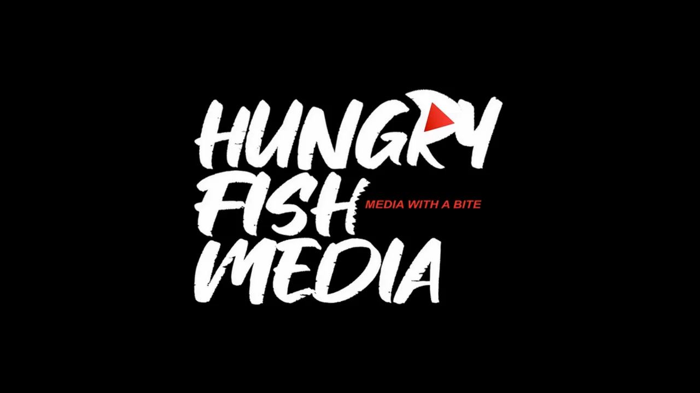

The new film "Paper Makers" tells the story of the modern day paper industry through the eyes of the workers who cultivate sustainable forests, apply technologies that nurture and protect them for years to come, and help create nature-based sustainable products — all in one of America's oldest natural industries.
In "Paper Makers", you'll meet the people—foresters, mill workers and engineers—who entered the pulp and paper industry out of a love for our planet and a need to showcase its riches, including:
There's new attention on paper and paper-based packaging which help provide everyday solutions that address a variety of environmental challenges and sustainability goals. From food and beverages to personal care and fashion, paper is at the forefront of innovation, providing sustainable, nature-based solutions for tomorrow. "Paper Makers" unearths little-known facts about how the industry comes together to conserve and regenerate important resources. Walk through the forests with these paper makers and witness their stories firsthand to learn why paper is a sustainable choice for the planet.